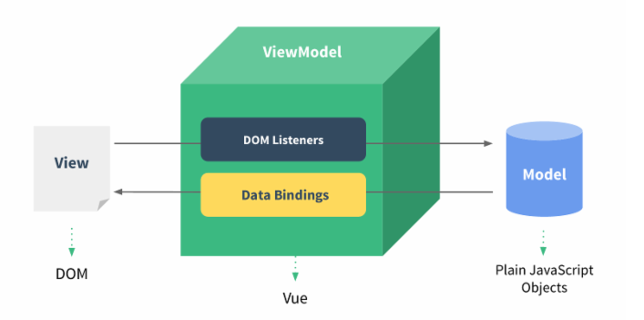

Vue.js 事件处理器
事件监听可以使用 v-on 指令：
增加 1
这个按钮被点击了 {{ counter }} 次。
v-on 可以接收一个定义的方法来调用：
Greet
用内联 JavaScript 语句：
Say hi
Say what
Vue.js 表单

输入框
input 元素：
消息是: {{ message }}
textarea 元素：
{{ message2 }}
复选框
单个复选框
{{ checked }}
多个复选框
Runoob
Google
taobao
选择的值为: {{ checkedNames }}
单选按钮
Runoob
Google
选中值为: {{ picked }}
select 列表
选择一个网站
Runoob
Google
选择的网站是: {{selected}}